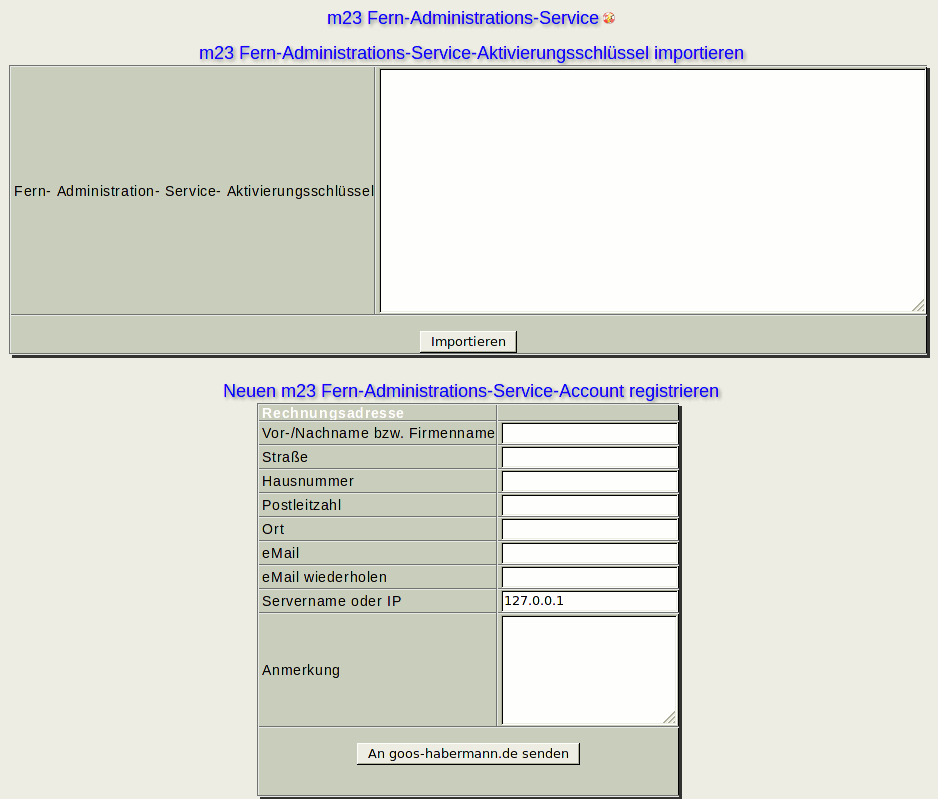

Der m23-Fern-Administrations-Service ist eine kostenpflichtige Dienstleistung von goos-habermann.de, bei der der Support von goos-habermann.de auf Ihre(n) m23-Server zugreifen kann, um Ihnen bei Ihren administrativen Tätigkeiten zu helfen. Weitere Informationen zum m23-Fern-Administrations-Service und zu unseren Tarifen und AGBs erhalten Sie unter goos-habermann.de.

Unterabschnitte
root
2013-08-18